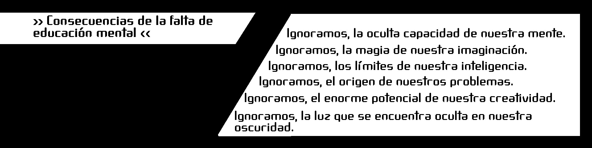
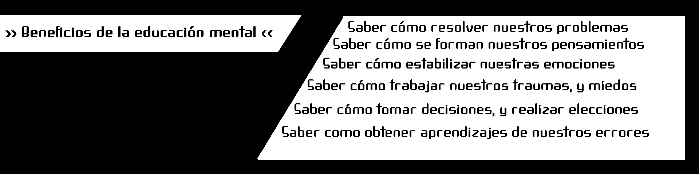
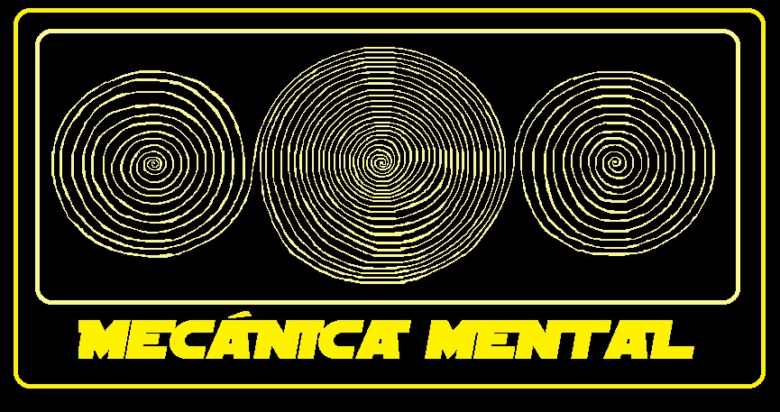
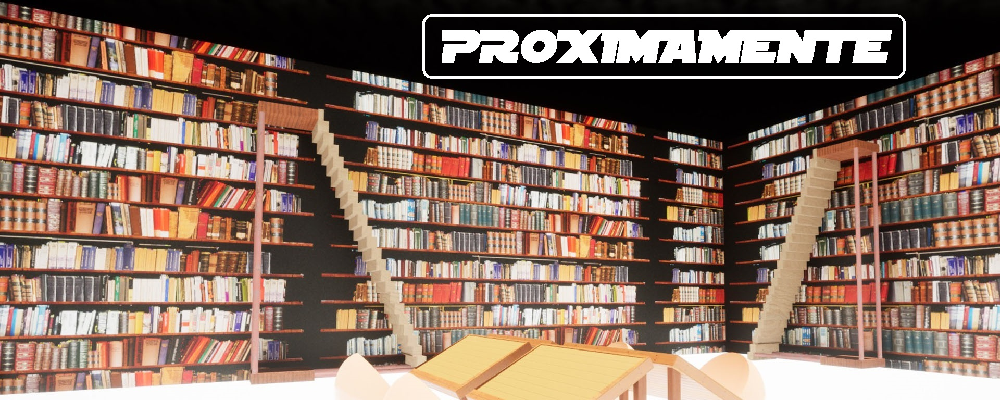

La educación como base para la salud mental, y para una vida en plenitud.
Mecánica Mental, es un sistema educativo dedicado a la comprensión de la mente, y el pensamiento, desarrollado desde la perspectiva del propio usuario de la mente, enfocado al uso eficiente de la mente del propio usuario, y expuesto en palabras simples y fáciles de asimilar.
El contenido de la educación mental, proporciona a cada persona conocimientos, experiencia, y saberes que le ayudarán a conocer, y comprender la forma en que los pensamientos se desarrollan, la influencia que estos tienen en nuestra vida, y los métodos que podemos utilizar para aprovechar su capacidad.
La educación mental, es un enorme faltante en nuestro estilo de vida, y en nuestra formación como seres humanos. Y ese faltante, es el origen de nuestra ignorancia, de nuestros problemas, de nuestros conflictos, y de nuestro sufrimiento.


Introducción
Desde el momento de mi nacimiento, y desde que tengo memoria, mi mente y mi pensamiento, siempre han sido mi compañía, mi guía, y mi herramienta, con la cual le he ido dando forma a mi vida, mi existencia, y mi personalidad.
Como toda persona racional de este mundo, he usado mi mente, y mi pensamiento para comprender el mundo que me rodea, resolver problemas, guardar memorias, comprender mis acciones, tomar elecciones, evaluar decisiones, e imaginar posibilidades.
Durante toda mi vida, mi mente y mi pensamiento, han servido de una forma correspondiente al uso que le he dado, y ha respondido correctamente a mi personalidad, mis gustos, y mis preferencias, hasta cierto punto…
En cierto punto de mi vida, una duda nació dentro de mi, una duda que con el tiempo se hizo más y más grande, generando preguntas, interrogantes, misterios, y una profunda sensación de desconocimiento e ignorancia.
Esta sensación, me ha acompañado por el resto de mi vida, provocando en mi interior una profunda inestabilidad emocional, miedo e inseguridad a la hora de hacer uso de aquello que lo había provocado, mi mente y mi pensamiento.
Desde que esa duda nació, he tenido que dedicar parte de mi tiempo, mi esfuerzo, mi voluntad, y mi concentración, en lograr dar respuesta a todas esas preguntas que se habían estado generando sin cesar, con el objetivo de volver a obtener paz, seguridad, y tranquilidad.
El camino ha sido largo, difícil, lleno de peligros, pérdidas, y sufrimiento, y a pesar de todo lo que tuve que vivir, y por todo lo que tuve que pasar, no me arrepiento de haberlo hecho, ya que el aprendizaje, las enseñanzas, los conocimientos, la experiencia, y las respuestas que logre traer hasta aquí, son de un valor sin igual, que compensan generosamente la balanza de mi equilibrio, mi paz, mi estabilidad, y mi felicidad.
Hoy, estimado lector, quiero compartir contigo aquello que aprendí, aquello que viví, aquello que comprendí, y aquello que experimente, con el propósito de que este te sea de utilidad a lo largo de tu vida y tu experiencia en este vasto y bello mundo, y para que no acabes por los lugares donde me tocó pasar.
Origen y fuentes
Antes de comenzar a compartir este sistema educativo, lo primero que debo hacer es revelar el origen y las fuentes de este material, ya que es necesario y fundamental a la hora de comprender en profundidad cada una de sus partes.
En primer lugar, debo advertirte que no soy psicólogo, filósofo, ni escritor. Tampoco poseo estudios universitarios de ningún tipo que avalen y certifiquen mi experiencia en esta área de trabajo. Todo lo escrito, todo lo aprendido, todo lo comprendido, todo lo compartido, y todo lo que se encuentra plasmado en este taller ha sido obtenido por mi mismo, por medio de mi propia experiencia, y por un trabajo que hice en mi mismo.
Como a cada habitante de este mundo, mi vida y mis elecciones me llevaron por una serie de situaciones y experiencias específicas. Y fueron estas vivencias las que dieron como fruto esta investigación, este taller, estas conclusiones, y este material.
Dentro de este taller, utilizaré y compartiré parte de mis experiencias y vivencias, con el objetivo de servir de ejemplo, de experiencia, y de apoyo a la hora de expresar respuestas, mostrar resultados, y compartir conocimientos.
Te recuerdo, y te advierto antes de comenzar, que este estudio no busca ser expresado como una verdad absoluta, ni como un resultado final, sino más bien como una guía, una recomendación, o un sendero que nos lleve a lograr comprender los misterios de la mente y el pensamiento, y con ello, obtener un estado racional armónico, tranquilo, funcional, y a fin a cada persona, y su experiencia de vida.
Si lo deseas, y esto te vuelve más fácil su comprensión, puedes tomar este taller como la “opinión” de alguien, sobre un tema en específico, que arroja una serie de particulares conclusiones y resultados, los cuales le ayudaron a armonizar, y re ordenar, su propia mente, sus propios pensamientos, y su propia vida.

Todo el contenido se ha desarrollado para ser fácil de comprender, y simple de asimilar.
Los objetivos de este sistema educativo son:
- Comprender el funcionamiento de nuestra mente.
- Fortalecer las raíces de nuestra capacidad mental.
- Favorecer el crecimiento de nuestra capacidad creativa.
- Equilibrar el desarrollo de nuestra capacidad racional.
- Conocer el sistema que genera nuestros pensamientos.
- Concientizar sobre el uso inadecuado de nuestra capacidad mental, y sobre sus consecuencias.
- Compartir con el usuario, herramientas y métodos que le permitan armonizar su corriente de pensamientos.
- Fomentar la autocomprensión, auto resolución, autoaprendizaje, y autoconocimiento.
- Fortalecer la voluntad, constancia, perseverancia, y esfuerzo, como las claves para el crecimiento.
Organigrama del taller. (etapa de fundación, y lanzamiento)
- El taller se dicta de manera presencial, y particular.
- Consta de tres talleres semanales, de una hora de duración.
- El lugar de dictado, y la hora, se establece con cada persona. Puede ser domicilio particular, o al aire libre. Disponibilidad limitada. (Consulte por horarios libres).
- Está destinado a personas de entre 17 y 20 años, rango de aprendizaje óptimo. (Consulte las opciones para mayores de 21 años).
- En etapa de fundación, y lanzamiento, el costo del taller puede ser pagado por medio de donativos, los cuales serán utilizados para continuar con el desarrollo y fundación de la institución.
Temas incluidos en la primera parte del taller.
Esta parte del taller posee un enfoque teórico, y su contenido tiene como objetivo conocer y comprender el proceso que se desarrolla en nuestra mente, y el sistema que le da forma a nuestros pensamientos.
- Introducción.
- Principios básicos I - Tu voz interior
- Principios básicos II - Pensar, y saber pensar
- Principios básicos III - Manual de usuario
- Introducción a la Mecánica Mental - La pregunta, y la respuesta
- Introducción a la Mecánica Mental - Punto de vista
- Introducción a la Mecánica Mental - Yo, la mente, y el pensamiento
- Proceso Mental I - Fundamentos
- Proceso Mental II - Percepción
- Proceso Mental III - Proceso Mental Interno
- Proceso Mental IV - El Pensamiento
- Los pilares del proceso Mental - Introducción
- El pilar de la Imaginación
- El pilar de la inteligencia
- El pilar de la creatividad
- El pilar de la Lógica
- El pilar de la Intuición
- El pilar de la Memoria
- Yo, el ser
- Lo que nos rodea
Temas incluidos en la segunda parte del taller.
Esta parte del taller posee un enfoque práctico, y su contenido presenta diferentes herramientas, métodos y consejos que al ser aplicados, permiten al usuario comprender, resolver, y remediar las diferentes problemáticas que se nos presentan en nuestro dia a dia.
Visión a largo plazo
La visión a largo plazo de Mecánica Mental, y de este sistema educativo, es lograr construir una institución sólida, en la cual puedan ser compartidos, impartidos, investigados, y desarrollados, todos los conocimientos y saberes necesarios para la comprensión de nuestra capacidad mental. Para que estos, le sean de utilidad a cada persona, y con ello, puedan desarrollar una aplicación segura, confiable, saludable, armónica, y favorable para todos los integrantes de nuestra sociedad.